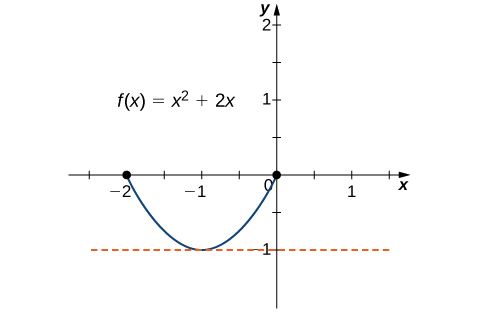
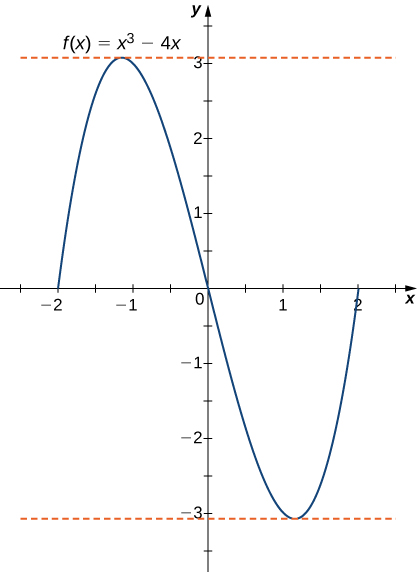
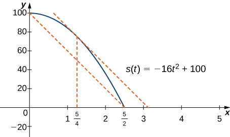

“Consider the following situation. Two towns are separated by a \(120\) km long stretch of road. The police in town A observe a car leaving at 1pm. Their colleagues in town B see the car arriving at 2pm. After a quick phone call between the two police stations, the driver is issued a fine for going \(120\) km/h at some time between 1pm and 2pm. It is intuitively obvious that, because his average velocity was \(120\) km/h, the driver must have been going at least \(120\) km/h at some point. From a knowledge of the average velocity of the car, we are able to deduce something about an instantaneous velocity.
In this scenario we are making use of a piece of mathematics called the Mean Value Theorem. It says that, under appropriate hypotheses, the average rate of change \(\ds\dfrac{f(b)-f(a)}{b-a}\) of a function over an interval is achieved exactly by the instantaneous rate of change \(f’(c)\) of the function at some (unknown) point \(a\leq c \leq b\text{.}\)
Informally, Rolle’s theorem states that if the outputs of a differentiable function \(f\) are equal at the endpoints of an interval, then there must be an interior point \(c\) where \(f'(c)=0\text{.}\)Figure 4.4.1illustrates this theorem.
Let \(f\) be a continuous function over the closed interval \([a,b]\) and differentiable over the open interval \((a,b)\) such that \(f(a)=f(b)\text{.}\) There then exists at least one \(c\in (a,b)\) such that \(f'(c)=0\text{.}\)
Case 2: Since \(f\) is a continuous function over the closed, bounded interval \([a,b]\text{,}\) by the extreme value theorem, it has an absolute maximum. Also, since there is a point \(x\in(a,b)\) such that \(f(x_\gt k\text{,}\) the absolute maximum is greater than \(k\text{.}\) Therefore, the absolute maximum does not occur at either endpoint. As a result, the absolute maximum must occur at an interior point \(c\in (a,b)\text{.}\) Because \(f\) has a maximum at an interior point \(c\text{,}\) and \(f\) is differentiable at \(c\text{,}\) by Fermat’s Theorem (Theorem 4.3.9), \(f'(c)=0\text{.}\)
An important point about Rolle’s theorem is that the differentiability of the function \(f\) is critical. If \(f\) is not differentiable, even at a single point, the result may not hold. For example, the function \(f(x)=|x|-1\) is continuous over \([-1,1]\) and \(f(-1)=0=f(1)\text{,}\) but \(f'(c)\ne 0\) for any \(c\in (-1,1)\) as shown in the following figure.
Since \(f(x)=|x|-1\) is not differentiable at \(x=0\text{,}\) the conditions of Rolle’s Theorem are not satisfied. In fact, the conclusion does not hold here; there is no \(c\in (-1,1)\) such that \(f'(c)=0\text{.}\)
For each of the following functions, verify that the function satisfies the criteria stated in Rolle’s theorem and find all values \(c\) in the given interval where \(f'(c)=0\text{.}\)
Since \(f\) is a polynomial, it is continuous and differentiable everywhere. In addition, \(f(-2)=0=f(0)\text{.}\) Therefore, \(f\) satisfies teh criteria of Rolle’s Theorem. We conclude that there exists at least one value \(c\in (-2,0)\) such that \(f'(c)=0\text{.}\) Since \(f'(x)=2x+2=2(x+1)\text{,}\) we see that \(f'(c)=2(c+1)=0\) implies \(c=-1\) as shown in the following graph.

Figure4.4.5.
This function is continuous and differentiable over \([-2,0]\text{,}\)\(f'(c)=0\) when \(c=-1\text{.}\)
As in part a, \(f\) is a polynomial and there is continuous and differentiable everywhere. Also, \(f(-2)=0=f(2)\text{.}\) That said, \(f\) satisfies the criteria of Rolle’s Theorem. Differentiating, we find that \(f'(x)=3x^2-4\text{.}\) Therefore, \(f'(c)=0\) when \(x=\ds\pm\frac{2}{\sqrt{3}}\text{.}\) Both points are in the interval \([-2,2]\text{,}\) and therefore, both points satisfy the conclusions of Rolle’s Theorem as shown in the following graph.

Figure4.4.6.
For this polynomial over \([-2,2]\text{,}\)\(f'(c)=0\) at \(x=\pm 2/\sqrt{3}\text{.}\)
Verify that the function \(f(x)=2x^2-8x+6\) defined over the interval \([1,3]\) satisfies the conditions of Rolle’s Theorem. Find all points \(c\) guaranteed by Rolle’s Theorem.
\(f(x)\) is a polynomial and is thus both continuous and differentiable over any interval. Also, \(f(1)=0=f(3)\text{,}\) so \(f(x)\) satisfies the hypotheses of Rolle’s Theorem. Since \(f'(x)=4x-8\text{,}\) then \(f'(c)=0\) when \(4c-8=0\text{,}\) or when \(c=2\text{.}\) Since \(2\in (1,3)\text{,}\) the conclusion to Rolle’s Theorem is satisfied.
Subsection4.4.2The Mean Value Theorem and Its Meaning
Rolle’s theorem is a special case of the Mean Value Theorem. In Rolle’s theorem, we consider differentiable functions \(f\) defined on the closed interval \([a,b]\) with \(f(a)=f(b)\text{.}\) The Mean Value Theorem generalizes Rolle’s theorem by considering functions that do not necessarily have equal value at the endpoints. Consequently, we can view the Mean Value Theorem as a slanted version of Rolle’s theorem (Figure 4.4.8). The Mean Value Theorem states that if \(f\) is continuous over the closed interval \([a,b]\) and differentiable over the open interval \((a,b)\text{,}\) then there exists a point \(c\in(a,b)\) such that the tangent line to the graph of \(f\) at \(c\) is parallel to the secant line connecting \((a,f(a))\) and \((b,f(b))\text{.}\)
The Mean Value Theorem says that for a function that meets its conditions, at some point the tangent line has the same slope as the secant line between the ends. For this function, there are two values \(c_1\) and \(c_2\) such that the tangent line to \(f\) at \(c_1\) and \(c_2\) has the same slope as the secant line.
Let \(f\) be continuous over the closed interval \([a,b]\) and differentiable over the open interval \((a,b)\text{.}\) Then, there exists at least one point \(c\in (a,b)\) such that
The proof follows from Rolle’s theorem by introducing an appropriate function that satisfies the criteria of Rolle’s theorem. Consider the line connecting \((a,f(a))\) and \((b,f(b))\text{.}\) Since the slope of that line is
The value \(g(x)\) is the vertical difference between the point \((x,f(x))\) and the point \((x,y)\) on the secant line connecting \((a,f(a))\) and \((b,f(b)))\text{.}\)
Since the graph of \(f\) intersects the secant line when \(x=a\) and \(x=b\text{,}\) we see that \(g(a)=0=g(b)\text{.}\) Since \(f\) is a differentiable function over \((a,b)\text{,}\)\(g\) is also a differentiable function over \((a,b)\text{.}\) Furthermore, since \(f\) is continuous over \([a,b]\text{,}\)\(g\) is also continuous over \([a,b]\text{.}\) Therefore, \(g\) satisfies the criteria of Rolle’s Theorem. Consequently, there exists a point \(c\in(a,b)\) such that \(g'(c)=0\text{.}\) Since
Example4.4.11.Verifying that the Mean Value Theorem Applies.
For \(f(x)=\sqrt{x}\) over the interval \([0,9]\text{,}\) show that \(f\) satisfies the hypothesis of the Mean Value Theorem, and therefore there exists at least one value \(c\in(0,9)\) such that \(f'(c)\) is equal to the slope of the line connecting \((0,f(0))\) and \((9,f(9))\text{.}\) Find these values \(c\) guaranteed by the Mean Value Theorem.
We know that \(f(x)=\sqrt{x}\) is continuous over \([0,9]\) and differentiable over \((0,9)\text{.}\) Therefore, \(f\) satisfies the hypotheses of the Mean Value Theorem, and there must exist at least one value \(c\in (0,9)\) such that \(f'(c)\) is equal to the slope of the line connecting \((0,f(0))\) and \((9,f(9))\) (Figure 4.4.12). To determine the value(s) of \(c\) are guaranteed, first calculate the derivative of \(f\text{.}\) The derivative \(\ds f'(x)=\frac{1}{2\sqrt{x}}\text{.}\) The slope of the line connecting \((0,f(0))\) and \((9,f(9))\) is given by
Solving this equation for \(c\text{,}\) we obtain \(c=\ds\frac{9}{4}\text{.}\) At this point, the slope of the tangent line equals the slope of the line joining the endpoints.
One application that helps illustrate the Mean Value Theorem involves velocity. For example, suppose we drive a car for \(1\) h down a straight road with an average velocity of \(45\) mph. Let \(s(t)\) and \(v(t)\) denote the position and velocity of the car, respectively, for \(0\le t\le 1\) h. Assuming that the position functions \(s(t)\) is differentiable, we can apply the Mean Value Theorem to conclude that, at some time \(c\in (0,1)\text{,}\) the speed of the car was exactly
If a rock is dropped from a height of \(100\) ft, its position \(t\) seconds after it is dropped until it hits the ground is given by the function \(s(t)=-16t^2+100\text{.}\)
When the rock hits the ground, its position is \(s(t)=0\text{.}\) Solving the equation \(−16t^2+100=0\) for \(t\text{,}\) we find that \(t=\ds\pm\frac{5}{2}\) sec. Since we are only considering \(t\ge 0\text{,}\) the ball will hit the ground \(\ds\frac{5}{2}\) sec after it is dropped.
The instantaneous velocity is given by the derivative of the position function. Therefore, we need to find a time \(t\) such that \(v(t)=s'(t)=v_{\text{avg}}=-4o\text{ ft/sec}\text{.}\) Since \(s(t)\) is continuous over the interval \([0,5/2]\) and differentiable over the interval \((0,5/2)\text{,}\) by the Mean Value Theorem, there is guaranteed to be a point \(c\in (0,5/2)\) such that
Taking the derivative of the position function \(s(t)\text{,}\) we find that \(s'(t)=-32t\text{.}\) Therefore the equation reduces to \(s'(c)=-32c=-40\text{.}\) Solving this equation for \(c\text{,}\) we have \(c=\ds\frac{5}{4}\text{.}\) Therefore, \(\ds\frac{5}{4}\) sec after the rock is dropped, the instantaneous velocity equals the average velocity of the rock during its free fall: \(-40\text{ ft/sec}\text{.}\)

Figure4.4.14.
At time \(\ds t=5/4\) sec, the velocity of the rock is equal to its average velocity from the time it is dropped until it hits the ground.
Suppose a ball is dropped from a height of \(200\) ft. Its position at time \(t\) is \(s(t)=-16t^2+200\text{.}\) Find the time \(t\) when the instantaneous velocity of the ball equals its average velocity.
At this point, we know the derivative of any constant function is zero. The Mean Value Theorem allows us to conclude that the converse is also true. In particular, if \(f'(x)=0\) for all \(x\) in some interval \(I\text{,}\) then 𝑓\(f(x)\) is constant over that interval. This result may seem intuitively obvious, but it has important implications that are not obvious, and we discuss them shortly.
Corollary4.4.16.Functions with a Derivative of Zero.
Let \(f\) be differentiable over an interval \(I\text{.}\) If \(f'(x)=0\) for all \(x\in I\text{,}\) then \(f(x)=\text{constant}\) for all \(x\in I\text{.}\)
Since \(f\) is differentiable over \(I\text{,}\)\(f\) must be continuous over \(I\text{.}\) Suppose \(f(x)\) is not constant for all \(x\) in \(I\text{.}\) Then there exist \(a,b\in I\text{,}\) where \(a\ne b\) and \(f(a)\ne f(b)\text{.}\) Choose the notation so that \(a\lt b\text{.}\) Therefore,
If \(f\) and \(g\) are differentiable over an interval \(I\) and \(f'(x)=g'(x)\) for all \(x\in I\text{,}\) then \(f(x)=g(x)+C\) for some constant \(C\text{.}\)
Let \(h(x)=f(x)-g(x)\text{.}\) Then \(h'(x)=f'(x)-g'(x)=0\) for all \(x\in I\text{.}\) By Corollary 4.4.16m there is a constant \(C\) such that \(h(x)=C\) for all \(x\in I\text{.}\) Therefore, \(f(x)=g(x)+C\) for all \(x\in I\text{.}\)
This fact is important because it means that for a given function \(f\text{,}\) if there exists a function \(F\) such that \(F'(x)=f(x)\text{;}\) then, the only other functions that have a derivative equal to \(f\) are 𝐹\(F(x)+C\) for some constant \(C\text{.}\) We discuss this result in more detail later in the chapter.
The third corollary of the Mean Value Theorem discusses when a function is increasing and when it is decreasing. Recall that a function \(f\) is increasing over \(I\) if \(f(x_1)\le f(x_2)\) whenever \(x_1\lt x_2\text{,}\) whereas \(f\) is decreasing over \(I\) if \(f(x_1)\gt f(x_2)\) whenever \(x_1\lt x_2\text{.}\) Using the Mean Value Theorem, we can show that if the derivative of a function is positive, then the function is increasing; if the derivative is negative, then the function is decreasing (Figure 4.4.18). We make use of this fact in the next section, where we show how to use the derivative of a function to locate local maximum and minimum values of the function, and how to determine the shape of the graph.
If a function has a positive derivative over some interval \(I\text{,}\) then the function increases over that interval \(I\text{;}\) if the derivative is negative over some interval \(I\text{,}\) then the function decreases over that interval \(I\text{.}\)
We will prove i.; the proof of ii. is similar. Suppose \(f\) is continuous and differentiable over an interval \(I\) and \(f'(x)\gt 0\) for all \(x\in I\text{.}\) By way of contradiction, suppose that \(f\) is not an increasing function on \(I\text{.}\) Then there exist \(a\) and \(b\) in \(I\) such that \(a\lt b\text{,}\) but \(f(a)\gt f(b)\text{.}\) Since \(f\) is a differentiable function over \(I\text{,}\) the Mean Value Theorem guarantees that there is some value \(c\in (a,b)\) such that
Now \(a\lt b\) so \(b-a\gt 0\text{.}\) Because \(f(a)\gt f(b)\text{,}\) it follows that \(f(b)-f(a)\lt 0\text{.}\) It follows that the quotient of \(f(b)-f(a)\) and \(b-a\) is negative. So, for \(c\text{,}\)
However, \(f'(x)\gt 0\) for all \(x\in I\) including \(c\text{.}\) This is a contradiction. The assumption that \(f\) is not an increasing function on \(I\) is false. Therefore, \(f\) is increasing throughout \(I\text{.}\)